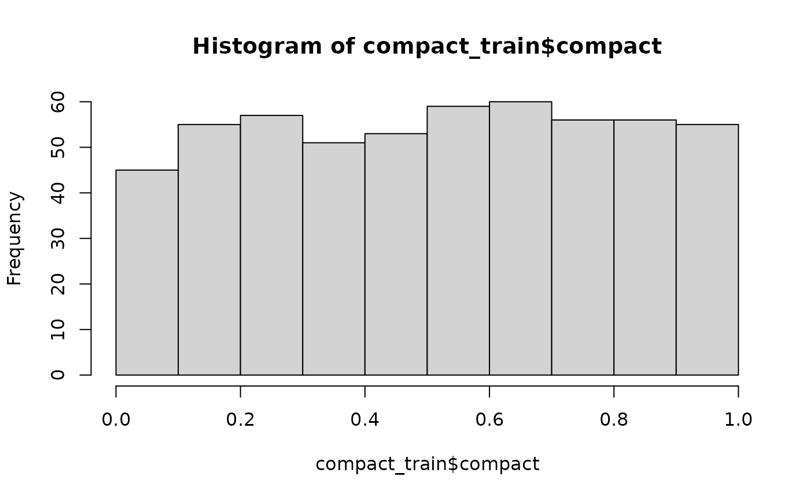

When evaluating districts, “compactness” is an important feature. But what makes a district compact? Often, it comes down to the human intuition of “you know it when you see it”, which has historically been hard to quantify.
To provide an alternative data-driven measure of compactness, the
desplim package includes a compactness score that directly
models this human intuition. Our approach is based on the work of Kaufman et al. (2021) who
successfully trained a model on human rankings of district shapes using
common geometric features.
The algorithm may need to calculate several thousands, if not millions, of compactness scores during complex split-merge problems. For this reason, we built our own lightweight and computationally efficient model using XGBoost.
This vignette provides an overview of how the metric was developed, using the original replication data and the tidyverse framework.
1. Data and Setup
A cleaned and pre-processed version of this dataset is included
directly in desplim as compact_train.
First, let’s load the libraries required for modeling and diagnostics.
library(desplim) # contains the cleaned training data
library(tidymodels) # core framework for modelling and pre-processing
library(xgboost) # model engine
library(DALEX) # model explainability
library(DALEXtra) # helper for DALEX
library(doFuture) # parallel processing
# Set up parallel processing
registerDoFuture()
n_cores <- max(1, parallel::detectCores(logical = FALSE) - 1)
plan(multisession, workers = n_cores)The compact_train data contains the human-assigned
compactness score (compact), ranging from 0 (least compact)
to 1 (most compact) and 10 geometric features for 547 unique district
shapes.
head(compact_train)
#> compact boyce box_reock hull len_wid polsby reock
#> 1 0.0300000 0.7649550 0.4896064 0.6262075 0.7534825 0.1145953 0.4057489
#> 2 0.2745098 0.7775373 0.4381054 0.6984327 0.8969073 0.2021440 0.3742773
#> 3 0.1300000 0.8304922 0.4871881 0.6415116 0.8888942 0.1258987 0.3280131
#> 4 0.1400000 0.8341214 0.4310280 0.6125937 0.6679481 0.1873192 0.3345650
#> 5 0.0100000 0.7016934 0.4300677 0.5800668 0.9635191 0.1019103 0.4143697
#> 6 0.1176471 0.8371308 0.3508467 0.5589451 0.3416772 0.1458956 0.1486579
#> schwartz skew sym_x sym_y
#> 1 0.3385193 0.2822636 0.6494468 0.5977191
#> 2 0.4496043 0.4190817 0.6090472 0.6896901
#> 3 0.3548220 0.2738264 0.5287228 0.5271888
#> 4 0.4328039 0.3005736 0.4305575 0.3530961
#> 5 0.3192339 0.2754020 0.4761292 0.4987708
#> 6 0.3819629 0.1683645 0.6358400 0.4629123
hist(compact_train$compact)
The histogram shows a relatively uniform distribution of compactness scores, which is ideal for training a model that can recognise the full spectrum from non-compact to highly compact shapes. As the output suggests, no single geometric feature appears to be a perfect predictor on its own.
The following plots show three sample districts from the dataset: one of the least compact, one with a medium score, and one of the most compact.
library(ggplot2)
library(sf)
#> Linking to GEOS 3.12.1, GDAL 3.8.4, PROJ 9.4.0; sf_use_s2() is TRUE
library(dplyr)
library(patchwork)
ggplot2::theme_set(ggplot2::theme_minimal(base_size = 14))
# Find districts with high, medium, and low compactness
highly_compact <- kaufman_25 |>
dplyr::slice_max(order_by = compact, n = 1)
moderately_compact <- kaufman_25 |>
dplyr::filter(between(compact, 0.4, 0.6)) |>
dplyr::slice(1)
non_compact <- kaufman_25 |>
dplyr::slice_min(order_by = compact, n = 1)
# Create plots
p1 <- ggplot(highly_compact) +
geom_sf() +
ggtitle(paste("High:", round(highly_compact$compact, 2))) +
theme_void()
p2 <- ggplot(moderately_compact) +
geom_sf() +
ggtitle(paste("Medium:", round(moderately_compact$compact, 2))) +
theme_void()
p3 <- ggplot(non_compact) +
geom_sf() +
ggtitle(paste("Low:", round(non_compact$compact, 2))) +
theme_void()
p1 + p2 + p3As the plots demonstrate, the scores align well with our visual intuition. The district with the low score is the most “irregular”, while the district with the high score is much more “regular”.
We’ll split the data into a training set (80%) and a testing set (20%). We stratify by the compact variable to ensure both sets have a similar distribution of scores.
set.seed(123)
# Data split
data_split <- initial_split(compact_train, prop = 0.8, strata = compact)
train_data <- training(data_split)
test_data <- testing(data_split)
# Recipe
model_recipe <- recipe(compact ~ ., data = train_data)2. Model specification and tuning
With the data prepared, we can train a model to predict the compactness score based on the 10 geometric features. We’ll use the well known XGBoost algorithm for this task. The process involves three main steps: building a workflow, tuning hyperparameters, and finalising the model.
2.1 Modelling workflow
First, we define our model specification using tidymodels. We mark standard hyperparameters for tuning, which allows us to find the best combination for our data. For more information, the documentation on the tune package comes in handy. For the parameter specification, we apply the defaults provided by the dials package.
We then bundle our (simple) pre-processing recipe and the model specification into a single workflow object. Finally, we create a 10-fold cross-validation.
# XGBoost specification
xgb_spec <- boost_tree(
trees = tune(),
tree_depth = tune(),
learn_rate = tune(),
mtry = tune(),
min_n = tune(),
loss_reduction = tune(),
sample_size = tune()
) |>
set_engine(
"xgboost",
objective = "reg:squarederror",
verbose = 0
) |>
set_mode("regression")
# XGBoost parameter specification
xgb_params <- parameters(
trees(),
tree_depth(),
learn_rate(),
finalize(mtry(), train_data),
min_n(),
loss_reduction(),
sample_prop()
)
# Workflow
xgb_workflow <- workflow() |>
add_recipe(model_recipe) |>
add_model(xgb_spec)
# Cross validation
set.seed(456)
cv_folds <- vfold_cv(train_data, v = 10)2.2 Bayesian hyperparameter tuning
Instead of testing every possible combination of parameters (through a grid search), we’ll use Bayesian optimisation. This is an adaptive method that uses the results from past iterations to search for the most promising future parameter combinations.
The baseline is 100 iterations, but it will stop early if it doesn’t find a better model after 20 rounds. We’ll use Root Mean Squared Error (RMSE) as the primary metric to optimise.
set.seed(789)
tune_results <- tune_bayes(
xgb_workflow,
resamples = cv_folds,
param_info = xgb_params,
initial = 10,
iter = 100,
metrics = metric_set(rmse, mae),
control = control_bayes(
verbose_iter = TRUE,
save_pred = FALSE,
save_workflow = FALSE,
uncertain = 5,
no_improve = 20
)
)2.3 Finalising the model
Once the tuning process is complete, we select the parameters that
resulted in the lowest RMSE. We then use the last_fit()
function, which is a convenient helper that performs the final two
steps:
Fits the finalised workflow (with the best parameters) on the entire training set.
Evaluates the performance of this final model on the held-out test set.
# Select the best parameters
best_params <- select_best(tune_results, metric = "rmse")
print(best_params)
#> # A tibble: 1 × 8
#> trees tree_depth learn_rate mtry min_n loss_reduction sample_size .config
#> <int> <int> <dbl> <int> <int> <dbl> <dbl> <chr>
#> 1 973 2 0.00938 4 3 0.00000000143 0.202 iter033
# Finalise the workflow
final_xgb_wf <- finalize_workflow(xgb_workflow, best_params)
final_fit <- last_fit(final_xgb_wf, data_split)3. Model performance
Having a final, trained model, we need to evaluate its performance on the held-out test data. This tells us how well the model is likely to perform on new, unseen districts.
3.1 Overall performance metrics
First, we’ll examine the summary performance metrics. The
collect_metrics() function gives us the Root Mean Squared
Error (RMSE) and the R-squared from the test set.
# Compute test metrics
test_metrics <- collect_metrics(final_fit)
print(test_metrics)
#> # A tibble: 2 × 4
#> .metric .estimator .estimate .config
#> <chr> <chr> <dbl> <chr>
#> 1 rmse standard 0.0997 pre0_mod0_post0
#> 2 rsq standard 0.885 pre0_mod0_post0The low RMSE and high R-squared indicate that the model’s predictions are, on average, very close to our target compactness scores.
3.2 Predicted versus actual scores
Metrics give us a high-level summary, but a plot of predicted versus actual values helps us better understand the model predictions across compactness scores.
# Collect the individual predictions on the test set
test_predictions <- collect_predictions(final_fit)
# Create the plot
predicted_vs_actual_plot <- ggplot(
test_predictions,
aes(x = compact, y = .pred)
) +
geom_point(alpha = 0.5, color = "dodgerblue") +
geom_abline(lty = 2, color = "red", linewidth = 1) +
labs(
title = "Predicted vs. actual compactness",
x = "Actual compactness",
y = "Predicted compactness"
) +
coord_fixed()
print(predicted_vs_actual_plot)
The plot confirms the presumed good performance. Aside from a few outliers, there are no major areas where the model systematically over- or under-predicts, suggesting it generalises well across the entire range of compactness scores.
3.3 Feature importance
Finally, we want to understand what geometric features the model relies on most to make its predictions. We can calculate feature importance by measuring how much the model’s prediction error increases when a single feature’s values are randomly shuffled.
# Extract the finalised and trained workflow
final_trained_workflow <- extract_workflow(final_fit)
# Create DALEX explainer and feature importance
train_predictors <- train_data |> select(-compact)
train_outcome <- train_data$compact
explainer <- explain_tidymodels(
final_trained_workflow,
data = train_predictors,
y = train_outcome,
label = "XGBoost"
)
feature_importance <- model_parts(explainer)
# Create summary dataframe
importance_summary_df <- feature_importance %>%
as_tibble() %>%
dplyr::filter(variable != "_baseline_" & variable != "_full_model_") %>%
group_by(variable) %>%
summarise(
mean_dropout = mean(dropout_loss),
min_dropout = min(dropout_loss),
max_dropout = max(dropout_loss),
.groups = "drop"
)
# Create plot
feature_importance_plot <- ggplot(
importance_summary_df,
aes(x = mean_dropout, y = reorder(variable, mean_dropout))
) +
geom_errorbarh(
aes(xmin = min_dropout, xmax = max_dropout),
height = 0.2,
color = "gray50",
linewidth = 0.9
) +
geom_point(
color = "darkred",
size = 3
) +
labs(
title = "Feature importance",
x = "Increase in RMSE after feature shuffling",
y = NULL
)
#> Warning: `geom_errobarh()` was deprecated in ggplot2 4.0.0.
#> ℹ Please use the `orientation` argument of `geom_errorbar()` instead.
#> This warning is displayed once every 8 hours.
#> Call `lifecycle::last_lifecycle_warnings()` to see where this warning was
#> generated.
print(feature_importance_plot)
#> `height` was translated to `width`.
The results clearly show that Polsby-Popper and Convex Hull are the two most influential features. This aligns with their common usage in (re-)districting analysis and their relation to what is typically perceived as compact. However, all features play a role in predicting the compactness score, justifying a more nuanced model setup.
4. Usage
This model is now available in the package through the
desplim_compactness() function.
The final test is to see how the model’s predictions compare to the original compactness scores on the example districts.
# Apply desplim_compactness to the original example districts
score_high <- desplim_compactness(highly_compact)$compactness
score_moderate <- desplim_compactness(moderately_compact)$compactness
score_low <- desplim_compactness(non_compact)$compactness
# Create comparison plots
p1_final <- ggplot(highly_compact) +
geom_sf() +
ggtitle(
"High Compactness",
subtitle = paste0(
"Original: ",
round(highly_compact$compact, 2),
"\nModel: ",
round(score_high, 2)
)
) +
theme_void()
p2_final <- ggplot(moderately_compact) +
geom_sf() +
ggtitle(
"Medium Compactness",
subtitle = paste0(
"Original: ",
round(moderately_compact$compact, 2),
"\nModel: ",
round(score_moderate, 2)
)
) +
theme_void()
p3_final <- ggplot(non_compact) +
geom_sf() +
ggtitle(
"Low Compactness",
subtitle = paste0(
"Original: ",
round(non_compact$compact, 2),
"\nModel: ",
round(score_low, 2)
)
) +
theme_void()
p1_final + p2_final + p3_final
As we can see, the scores from the desplim_compactness()
function are very close to the original compactness scores.
Finally, we can investigate the example district with the largest
deviance between the model prediction and actual compactness score. We
set keep_metrics = TRUE in the
desplim_compactness() function. This returns not just the
final score, but also the 10 underlying geometric features, which is
useful for diagnosing specific cases.
# Calculate deviances
compare_scores <- desplim_compactness(kaufman_25, keep_metrics = TRUE) |>
mutate(deviance = abs(compact - compactness))
# Find the district with the largest deviance
max_deviance <- compare_scores %>%
dplyr::slice_max(order_by = deviance, n = 1)
# Plot the result
ggplot(max_deviance) +
geom_sf(fill = "firebrick", alpha = 0.7) +
ggtitle(
"Largest deviance in example data",
subtitle = paste0(
"Original score: ",
round(max_deviance$compact, 2),
"\nModel score: ",
round(max_deviance$compactness, 2),
"\nDeviance: ",
round(max_deviance$deviance, 2)
)
) +
theme_void()The main reason for the high deviance is the disagreement between the different geometrical feaures of the district:
print(max_deviance)
#> Simple feature collection with 1 feature and 13 fields
#> Geometry type: POLYGON
#> Dimension: XY
#> Bounding box: xmin: -88.02823 ymin: 42.12151 xmax: -87.88505 ymax: 42.36036
#> Geodetic CRS: NAD83
#> compact boyce box_reock hull len_wid polsby reock
#> 1 0.4509804 0.7310901 0.3964636 0.5551677 0.4437754 0.1500558 0.2241015
#> schwartz skew sym_x sym_y compactness deviance
#> 1 0.3873703 0.2151164 0.4948946 0.4713435 0.1758566 0.2751238
#> geometry
#> 1 POLYGON ((-88.02823 42.2698...The shape has a very low polsby score (indicating a highly complex perimeter), while other features are not as low. This example doesn’t indicate model failure. It rather highlights that the model is sensitive to perimeter complexity.
devtools::session_info(pkgs = c("attached"))
#> ─ Session info ───────────────────────────────────────────────────────────────
#> setting value
#> version R version 4.5.1 (2025-06-13)
#> os Ubuntu 24.04.3 LTS
#> system x86_64, linux-gnu
#> ui X11
#> language en
#> collate C.UTF-8
#> ctype C.UTF-8
#> tz UTC
#> date 2025-09-13
#> pandoc 3.1.11 @ /opt/hostedtoolcache/pandoc/3.1.11/x64/ (via rmarkdown)
#> quarto NA
#>
#> ─ Packages ───────────────────────────────────────────────────────────────────
#> package * version date (UTC) lib source
#> broom * 1.0.9 2025-07-28 [1] RSPM
#> DALEX * 2.5.2 2025-07-27 [1] RSPM
#> DALEXtra * 2.3.0 2023-05-26 [1] RSPM
#> desplim * 0.1.0 2025-09-13 [1] local
#> devtools * 2.4.5 2022-10-11 [1] RSPM
#> dials * 1.4.2 2025-09-04 [1] RSPM
#> doFuture * 1.1.2 2025-07-14 [1] RSPM
#> dplyr * 1.1.4 2023-11-17 [1] RSPM
#> foreach * 1.5.2 2022-02-02 [1] RSPM
#> future * 1.67.0 2025-07-29 [1] RSPM
#> geos * 0.2.4 2023-11-30 [1] RSPM
#> ggplot2 * 4.0.0 2025-09-11 [1] RSPM
#> infer * 1.0.9 2025-06-26 [1] RSPM
#> modeldata * 1.5.1 2025-08-22 [1] RSPM
#> parsnip * 1.3.3 2025-08-31 [1] RSPM
#> patchwork * 1.3.2 2025-08-25 [1] RSPM
#> purrr * 1.1.0 2025-07-10 [1] RSPM
#> recipes * 1.3.1 2025-05-21 [1] RSPM
#> redistmetrics * 1.0.9 2025-04-29 [1] RSPM
#> rsample * 1.3.1 2025-07-29 [1] RSPM
#> scales * 1.4.0 2025-04-24 [1] RSPM
#> sf * 1.0-21 2025-05-15 [1] RSPM
#> tailor * 0.1.0 2025-08-25 [1] RSPM
#> tidymodels * 1.4.1 2025-09-08 [1] RSPM
#> tidyr * 1.3.1 2024-01-24 [1] RSPM
#> tune * 2.0.0 2025-09-01 [1] RSPM
#> usethis * 3.2.1 2025-09-06 [1] RSPM
#> workflows * 1.3.0 2025-08-27 [1] RSPM
#> workflowsets * 1.1.1 2025-05-27 [1] RSPM
#> xgboost * 1.7.11.1 2025-05-15 [1] RSPM
#> yardstick * 1.3.2 2025-01-22 [1] RSPM
#>
#> [1] /home/runner/work/_temp/Library
#> [2] /opt/R/4.5.1/lib/R/site-library
#> [3] /opt/R/4.5.1/lib/R/library
#> * ── Packages attached to the search path.
#>
#> ──────────────────────────────────────────────────────────────────────────────